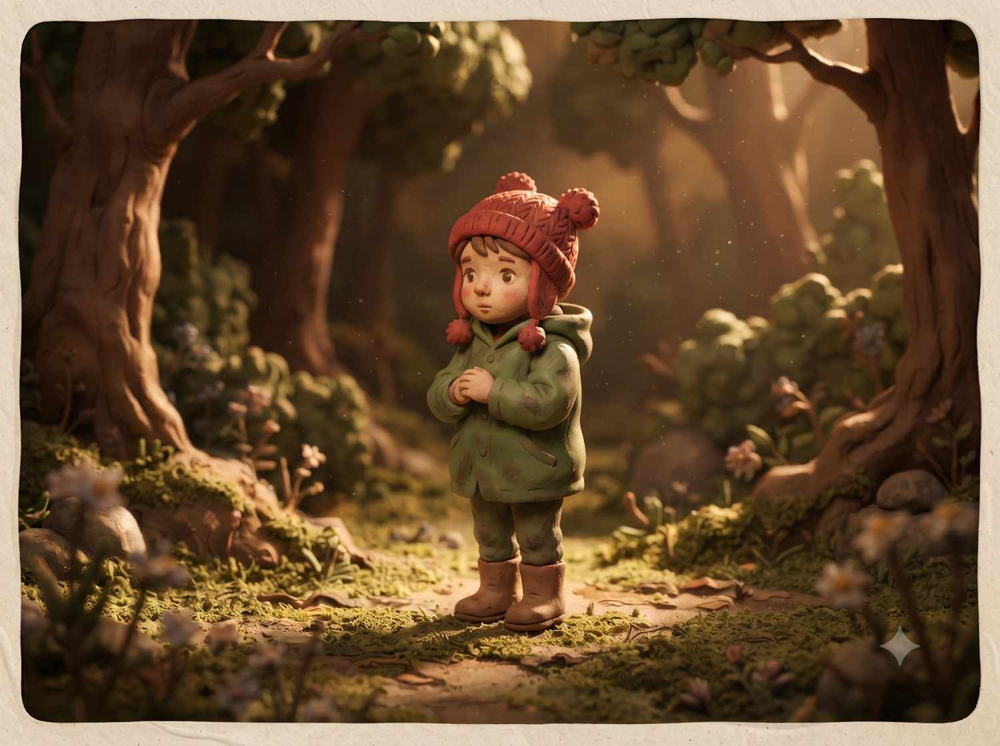

Clay character prompt
Claymation character
Reimagine a subject as a tactile stop-motion character with hand-shaped details and a miniature set.

Copy this prompt
Reimagine the subject as a stop-motion claymation character, with visible fingerprint texture on the clay, slightly asymmetrical hand-sculpted features, and a matte plasticine finish. Set against a miniature handcrafted set with warm tungsten lighting, like a frame from a classic clay-animation film.
How to use it
- Upload a reference photo if you want to retain the subject's likeness.
- Use the prompt with an image tool that supports reference images.
- Customize the miniature set, clay colors, or lighting mood.